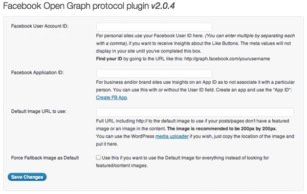
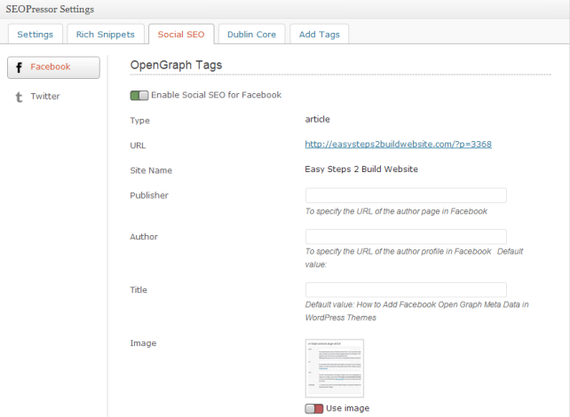

We discussed a little bit about Facebook open graph protocol in the last tutorial of how to add Facebook like button to website. This post is to discuss about what are open graph meta data and how to add them into your WordPress theme easily.
Image credit: http://www.flickr.com/
Before we share the steps of implementing Open graph tags into WordPress, lets have a look at the below snapshot. It’s a Facebook share and It has author information, publisher site, post’s URL, title, perfect description and a best fit image, which makes it look attractive. Such kind of shares definitely increases content sharing and brings traffic to your site. The below share happened to be like this only because of the open graph meta tags.
How they look like?
They can be viewed in a source code of a web page and this is how they look: The below snippets being taken from one of my previous articles at this site.
<meta property="og:type" content="article" /> <meta property="og:url" content= "https://beginnersbook.com/2013/09/add-facebook-like-button-website/" /> <meta property="article:author" content="" /> <meta property="article:publisher" content="https://www.facebook.com/es2bw" /> <meta property="og:title" content="How to add facebook like button to website" /> <meta property="og:description" content="Adding a Facebook like button to the website is an easy task, however you may need to have an eye on few other performance related issue which may occur while a(...)" /> <meta property="og:image" content= "https://beginnersbook.com/wp-content/uploads/2013/09/fblike1-150x150.jpg" />
How to Add Facebook Open Graph Meta Data tags into your WordPress Theme
There are two methods of doing it:
- Manual method – Requires to add code to your theme’s template manually
- WordPress Plugins to add open graph meta data
Recommended readings:
- Facebook open graph debugger tool – For fixing the issues which may occur while implementing Open graph in WordPress themes.
- 5 Free plugins to add Facebook open graph in WordPress – Collection of free and popular WordPress plugins for adding Open graph in WordPress.
- How to add Facebook open graph meta tags using Yoast’s Plugin – Step by Step guide for adding Open graph meta tags in WordPress using WordPress SEO by Yoast plugin.
Manual method:
Open functions.php file and paste the below 4 functions in it.
function 1: It is to add Facebook and open graph name-servers into your website’s header so that the browser can expect the facebook open graph meta information.
//Facebook and Open Graph nameservers
function add_opengraph_nameser( $output ) {
return $output . '
xmlns:og="http://opengraphprotocol.org/schema/"
xmlns:fb="http://www.facebook.com/2008/fbml"';
}
add_filter('language_attributes', 'add_opengraph_nameser');
function 2: It is the main one, which adds the open graph meta data information to your site dynamically. If you see the code, you would notice that it is calling two custom functions, one for image and other one for excerpt.
// Facebook Open Graph
add_action('wp_head', 'fb_opengraph_meta');
function fb_opengraph_meta() {
if (is_single()) {
global $post;
if(get_the_post_thumbnail($post->ID, 'thumbnail')) {
$thumbnail_id = get_post_thumbnail_id($post->ID);
$thumbnail_object = get_post($thumbnail_id);
$image = $thumbnail_object->guid;
} else {
$image = ''; // Change this to the URL of the logo you want beside your links shown on Facebook
}
//$description = get_bloginfo('description');
$description = my_excerpt( $post->post_content, $post->post_excerpt );
$description = strip_tags($description);
$description = str_replace(""", """, $description);
?>
<meta property="og:title" content="<?php the_title(); ?>" />
<meta property="og:type" content="article" />
<meta property="og:image" content="<?php echo get_opengraph_image(); ?>" />
<meta property="og:url" content="<?php the_permalink(); ?>" />
<meta property="og:description" content="<?php echo $description ?>" />
<meta property="og:site_name" content="<?php echo get_bloginfo('name'); ?>" />
<?php }
}
function 3: It would include a 60 words excerpt for og:description into the post. If you want to modify the excerpt length then change the value 60 in the below to an integer number of your choice.
function my_excerpt($text, $excerpt){
if ($excerpt) return $excerpt;
$text = strip_shortcodes( $text );
$text = apply_filters('the_content', $text);
$text = str_replace(']]>', ']]>', $text);
$text = strip_tags($text);
$excerpt_length = apply_filters('excerpt_length', 60);
$excerpt_more = apply_filters('excerpt_more', ' ' . '[...]');
$words = preg_split("/[n
]+/", $text, $excerpt_length + 1, PREG_SPLIT_NO_EMPTY);
if ( count($words) > $excerpt_length ) {
array_pop($words);
$text = implode(' ', $words);
$text = $text . $excerpt_more;
} else {
$text = implode(' ', $words);
}
return apply_filters('wp_trim_excerpt', $text, $raw_excerpt);
}
function 4: Our main function calls this function for og:image meta tag. The image fetched by below code would be displayed when someone shares or likes your content on Facebook.
What this function does? It selects the featured image for open graph if available. If it doesn’t find any featured image then it looks for the image used in the post, if no image is being used in the post then it uses the default image set within the code. Replace http://example-domain.com/default-image.jpg with your default image URL.
function get_opengraph_image() {
$src = wp_get_attachment_image_src( get_post_thumbnail_id($post->ID), '', '' );
if ( has_post_thumbnail($post->ID) ) {
$ogimage = $src[0];
} else {
global $post, $posts;
$ogimage = '';
$output = preg_match_all('/<img.+src=['"]([^'"]+)['"].*>/i',
$post->post_content, $matches);
$ogimage = $matches [1] [0];
}
if(empty($ogimage)) {
$ogimage = "http://example-domain.com/default-image.jpg";
}
return $ogimage;
}
WordPress Plugins to add open graph meta data
1) WP Facebook Open Graph Protocol Plugin (free!!)
The above method requires little bit coding but if you want to get it done using plugin then WP Facebook open graph protocol plugin is a better option. Download it from here.
Configuration: This is how the settings screen would look like for this plugin –

2) Yoast WordPress SEO plugin (Free!!)
This plugin is one of the best free plugin for Search engine optimization. Using it, you can now add open graph tags while writing the post. I believe you must be using it, if not then download it from here.
3) SEOPressor v5 (Premium!!)
It is a premium plugin but the features it provides are worth of the money, it costs. It provides a panel just below the post editor, to add Facebook open graph tags (see the below screenshot). If you are planning to buy it then read my review of SEOPressor 5.

Let us know if you have any questions regarding this or in case you face any issue while setting up the manual code for Facebook open graph meta data.
hello,
old post, but I have not found a solution… Is there a way to add function to check if article is a .gif image and set og:url to path for image and og:type set for video:other?
Regards